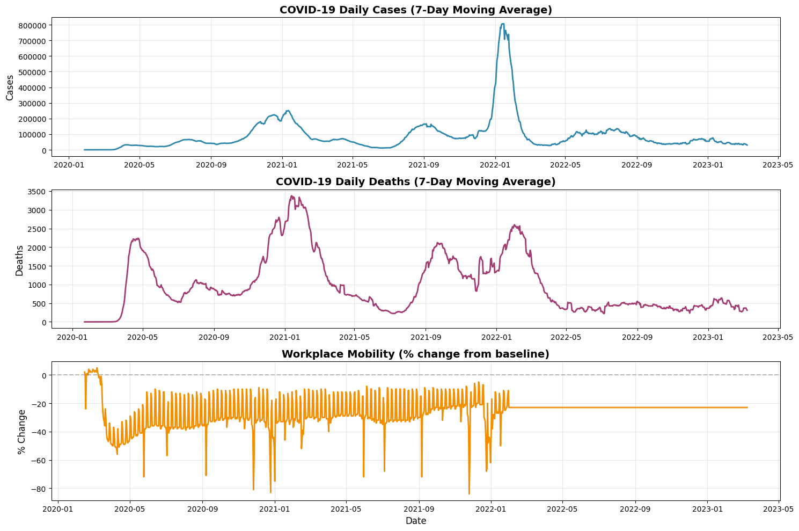

Probabilistic Forecasting with GluonTS: A COVID-19 Data Tutorial
TL;DR: GluonTS is a Python toolkit for probabilistic time-series forecasting. This tutorial starts with synthetic data, trains DeepAR, SimpleFeedForward, and DeepNPTS models, and then walks through a historical COVID-19 case study. You will learn how to read prediction intervals and evaluate forecasts without treating one holdout result as a universal model ranking.
What you will build#
A point forecast gives one estimate for each future time step. A probabilistic forecast gives a distribution of possible values, so you can inspect both a central estimate and a range of outcomes.
This tutorial uses GluonTS to:
- prepare a time series as a
ListDataset; - train and compare three forecasting estimators;
- read forecast quantiles such as the 10th, 50th, and 90th percentiles;
- evaluate a 14-day forecast on historical COVID-19 data.
The code is pinned to the project environment, which uses
gluonts[torch]==0.14.0. The API may differ in newer releases. The complete
project, including Docker setup and notebooks, is in
tutorials/GluonTS_COVID19_Prediction.
Scope: The COVID-19 data ends in March 2023. This is a retrospective teaching example, not a current public-health forecasting system or policy recommendation.
Start with synthetic data#
The project takes a synthetic-data-first approach. In the API notebook, you first forecast a clean repeating signal, then a series with multiple patterns, and finally a series with a regime change. Synthetic data makes it easier to see what a model is learning before adding the reporting artifacts and assumptions in a real dataset.
The core workflow is the same for each series:
flowchart LR
A[Time series] --> B[ListDataset]
B --> C[Estimator]
C --> D[Train]
D --> E[Predictor]
E --> F[Forecast distribution]Here is a small DeepAR example using a generated daily series. The test dataset
contains the full series; make_evaluation_predictions holds out the last
prediction_length values for evaluation.
import numpy as np
from gluonts.dataset.common import ListDataset
from gluonts.evaluation import make_evaluation_predictions
from gluonts.torch.model.deepar import DeepAREstimator
rng = np.random.default_rng(42)
t = np.arange(365)
target = 50 + 10 * np.sin(2 * np.pi * t / 30) + rng.normal(0, 1, 365)
prediction_length = 30
train_ds = ListDataset(
[{"start": "2020-01-01", "target": target[:-prediction_length]}],
freq="D",
)
test_ds = ListDataset(
[{"start": "2020-01-01", "target": target}],
freq="D",
)
predictor = DeepAREstimator(
freq="D",
prediction_length=prediction_length,
context_length=60,
trainer_kwargs={"max_epochs": 5},
).train(train_ds)
forecast_it, actual_it = make_evaluation_predictions(
dataset=test_ds,
predictor=predictor,
num_samples=100,
)
forecast = next(forecast_it)
lower = forecast.quantile(0.1)
median = forecast.quantile(0.5)
upper = forecast.quantile(0.9)
lower and upper are the 10th and 90th forecast quantiles, forming an 80%
prediction interval. They do not guarantee that the next observation will land
inside the interval. Check calibration across many forecast origins: an interval
labeled 80% should contain about 80% of observations over repeated evaluations.
Understand the models#
The notebooks compare three estimators with different modeling approaches. Treat this table as a starting point for experiments, not a universal ranking.
| Model | Approach | Useful comparison question |
|---|---|---|
| DeepAR | Autoregressive recurrent model | Does sequential structure help on this series? |
| SimpleFeedForward | Maps a recent context window to a forecast horizon | Is a simpler baseline competitive? |
| DeepNPTS | Neural non-parametric time-series model | Does this estimator improve the forecast distribution? |
The best choice depends on the dataset, forecast horizon, covariates, and evaluation setup. Train candidate models on the same split and compare their forecasts against simple baselines.
Apply the workflow to historical COVID-19 data#
The example notebook loads U.S. case and death counts and Google mobility data, aggregates them nationally, and builds a daily series. Its target is the seven-day moving average of new cases. The default model uses three dynamic features: the seven-day moving average of deaths, cumulative deaths, and a cumulative case-fatality ratio. The source data also contains mobility measures, but they are not part of the default minimal feature set.

Notebook figure from the historical example. The mobility series is carried forward after its last available observation, so inspect feature coverage before using it.
To run the notebooks, use the project’s README. It documents the pinned requirements and Docker/Jupyter setup; the COVID example downloads its data files when needed.
Illustrative results, not a point-in-time benchmark
The saved test_ds includes observed values for dynamic features during
the 14-day forecast window. That gives models using those features access
to future death-derived values that would not be available at forecast
time. The table below records one notebook run, but it is not a leakage-free
model comparison and should not be used as a benchmark or estimate of
real-world accuracy. A point-in-time feature strategy and a rerun are
needed before drawing those conclusions.
The saved notebook run reports the following errors on its 14-day holdout:
| Model | MAE | RMSE | MAPE |
|---|---|---|---|
| DeepAR | 12,492 | 13,133 | 36.57% |
| SimpleFeedForward | 4,465 | 5,267 | 13.38% |
| DeepNPTS | 5,150 | 5,740 | 15.30% |
In that run, SimpleFeedForward had the lowest error on all three reported metrics. This is one saved run on one split, not evidence that it is generally the best model. Training is stochastic, and results depend on the data, split, features, and settings. MAE and RMSE are in the target's units; MAPE is a percentage error and can be unstable when actual values are near zero.
Read forecasts and evaluate them#
A forecast object exposes both point summaries and the simulated sample paths:
forecast.mean # mean forecast at each time step
forecast.quantile(0.5) # median forecast
forecast.quantile(0.1) # lower end of an 80% prediction interval
forecast.quantile(0.9) # upper end of an 80% prediction interval
forecast.samples # sampled future paths
Use MAE or RMSE to compare point forecasts. To assess the forecast distribution, also inspect quantile loss and interval coverage. A model can have low point error while giving poorly calibrated intervals, so one metric is not enough.
For a fair time-series evaluation, preserve time order: train on observations before the forecast origin, then evaluate on later observations. Repeat this at multiple forecast origins when possible. Also verify that every feature used during the forecast would have been available at that time.
Important limits in the COVID-19 example#
The notebook is useful for learning the GluonTS workflow, but its outputs need careful interpretation:
- The data is historical and ends in March 2023; it cannot inform current case levels.
- The example evaluates one 14-day holdout. A single window says little about performance across different waves or forecast dates.
- The holdout supplies observed dynamic features over the forecast period. A real forecast needs feature forecasts or covariates known in advance; the warning above explains why the saved scores are illustrative.
- The scenario routine is exploratory. The default feature set is
minimal, which does not include mobility inputs, so its mobility adjustments do not affect the default model. Even with mobility features, changing correlated inputs does not estimate the causal effect of an intervention.
These are useful checks to make before adapting a tutorial model to a real decision. A predictive association is not a causal estimate, and forecast intervals do not account automatically for every source of data or model uncertainty.
Try it yourself#
- Start with
GluonTS.API.ipynband compare the three models on the same synthetic split. - Run
GluonTS.example.ipynbto inspect the data pipeline and historical holdout results. - Change one modeling choice at a time: the forecast horizon, context length, feature set, or training epochs.
- Re-evaluate on multiple time-based splits and compare against a simple baseline.
- If using dynamic features, make their future values realistic and available at each forecast origin.
References#
- GluonTS documentation
- GluonTS source repository
- DeepAR paper
- GluonTS paper
- Tutorial README and data notes
Acknowledgments#
Ibrahim Ahmed Mohammed contributed editorial review, technical improvements, and publication preparation.